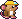

CHEDDAR · DEPTH 80
+6,035
1.6M+12.4K/s
25.6M+3.1K/s
1.2K+40/s
BANNERS, AVISOS, CONFETI Y COMBO
Sobre el MAIN aprobado (sin cambiar su contenido): el carril de noticias, la franja y la de hito, el confeti y el medidor de combo. Toca la roca o MINE deprisa para el combo; el resto, desde la columna de abajo.


New milestone in CHEESE upgrades: Grand Wheel

Biscuit19.1Qa10.3Qa